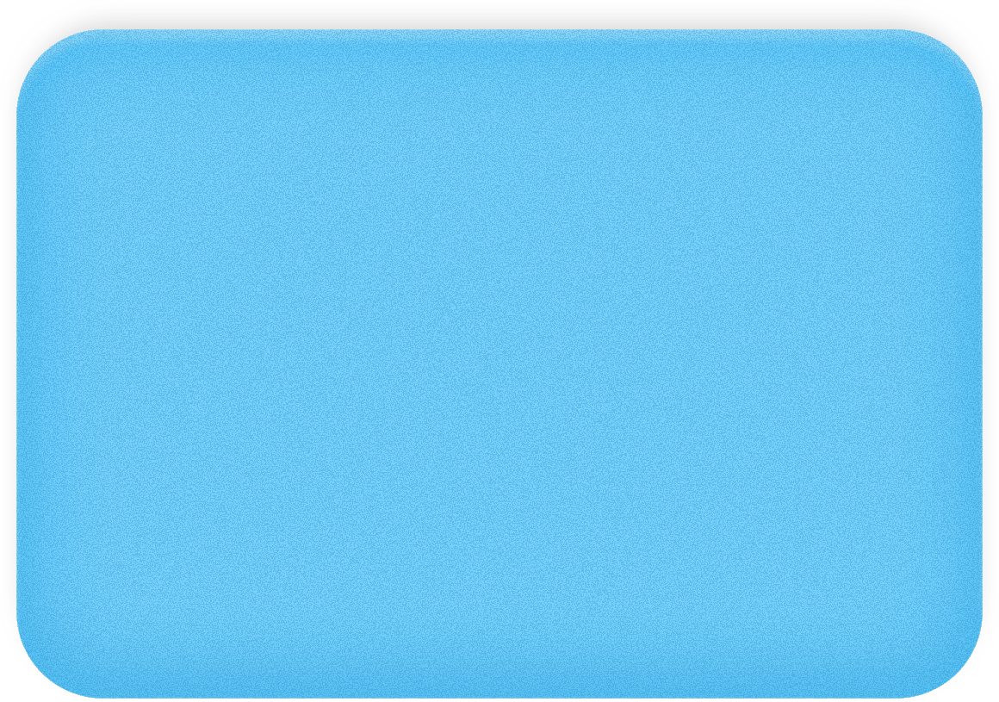
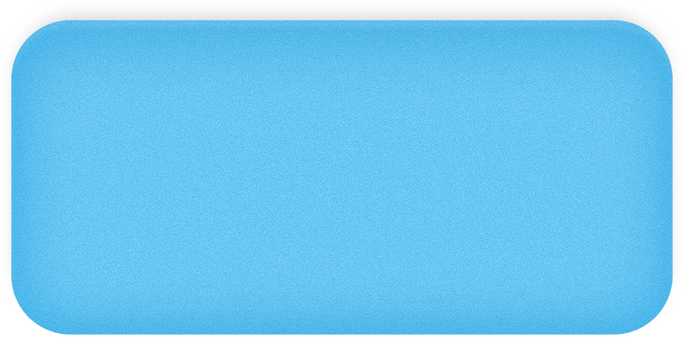

crystal.chiu
Programs
[PROJECT TAGLINE — one line describing the Programs case study]
Languages
[PROJECT TAGLINE — one line describing the Languages case study]
Content Creator
[PROJECT TAGLINE — one line describing the Content Creator case study]